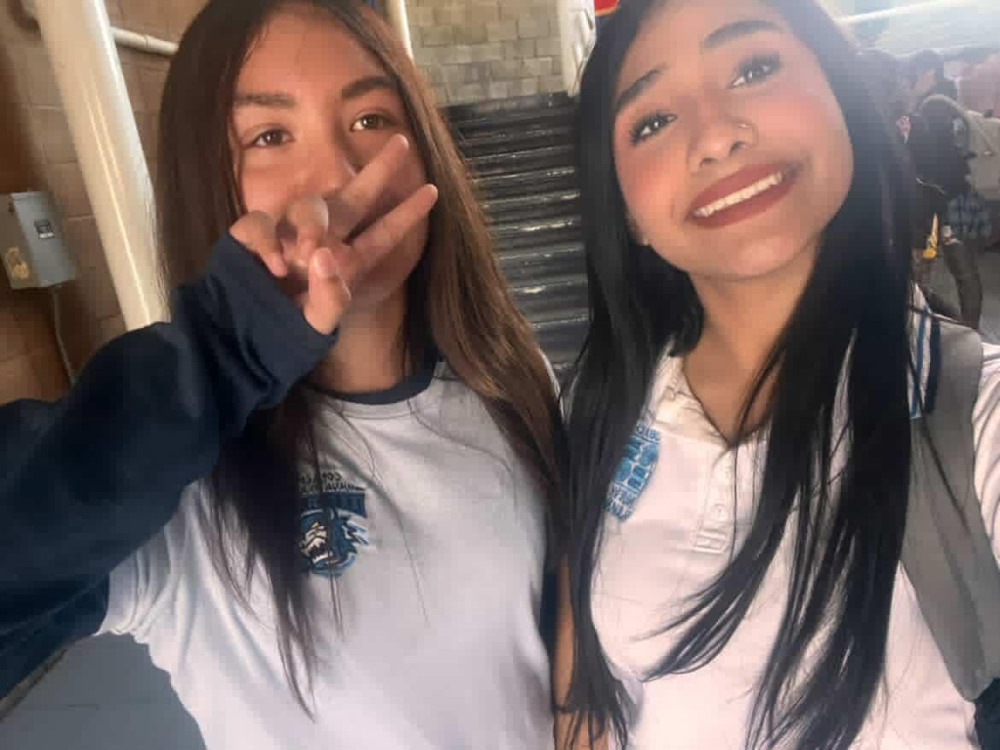
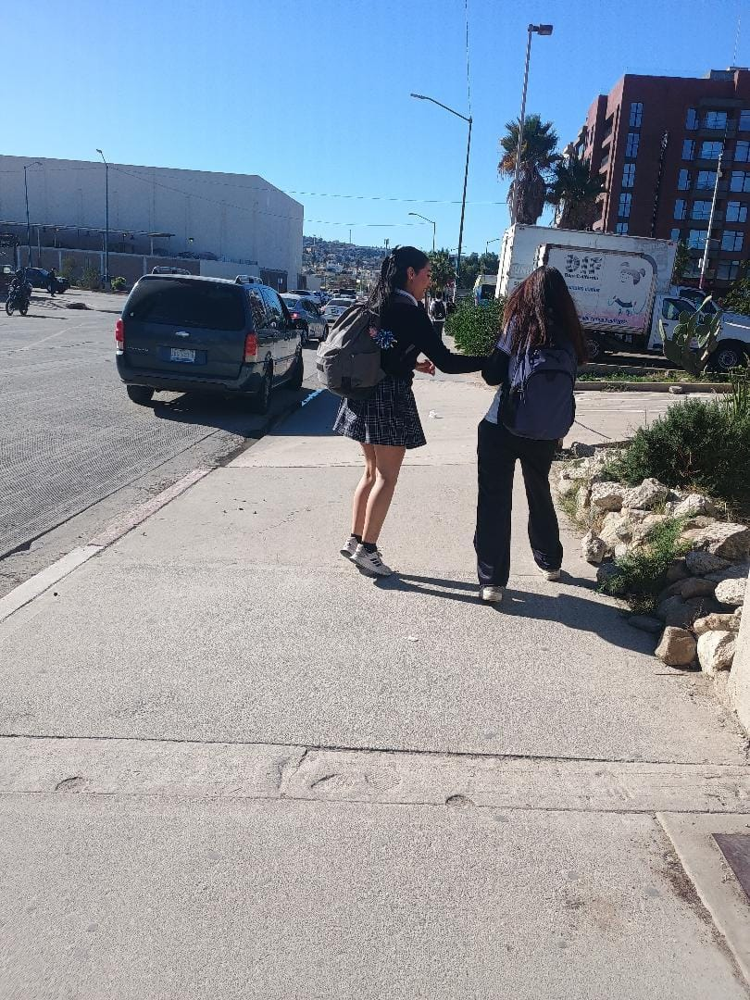
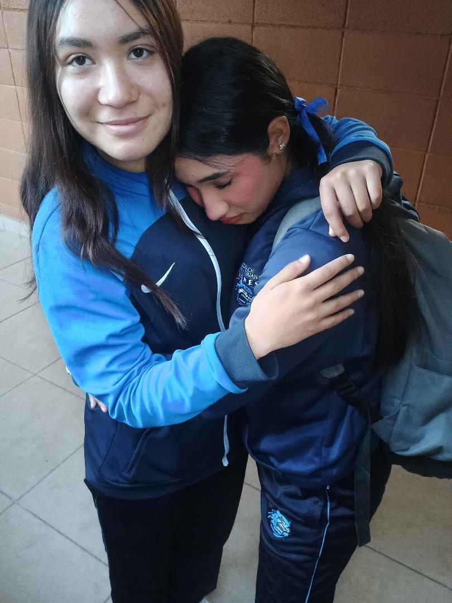
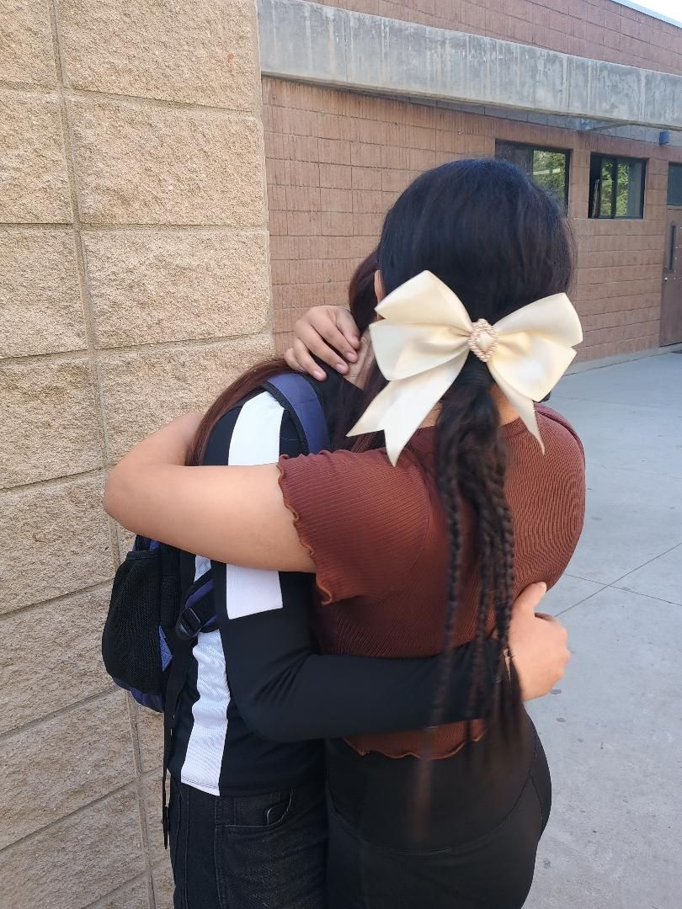
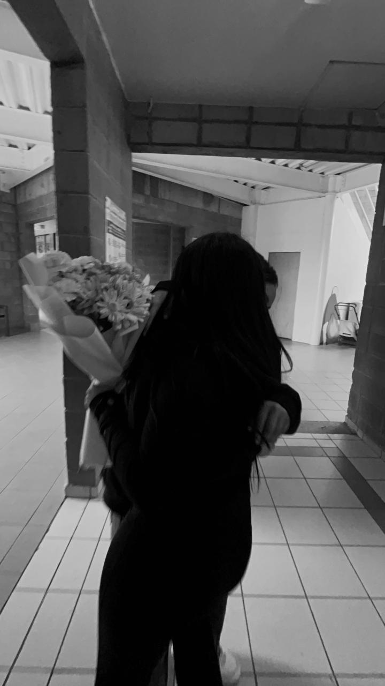
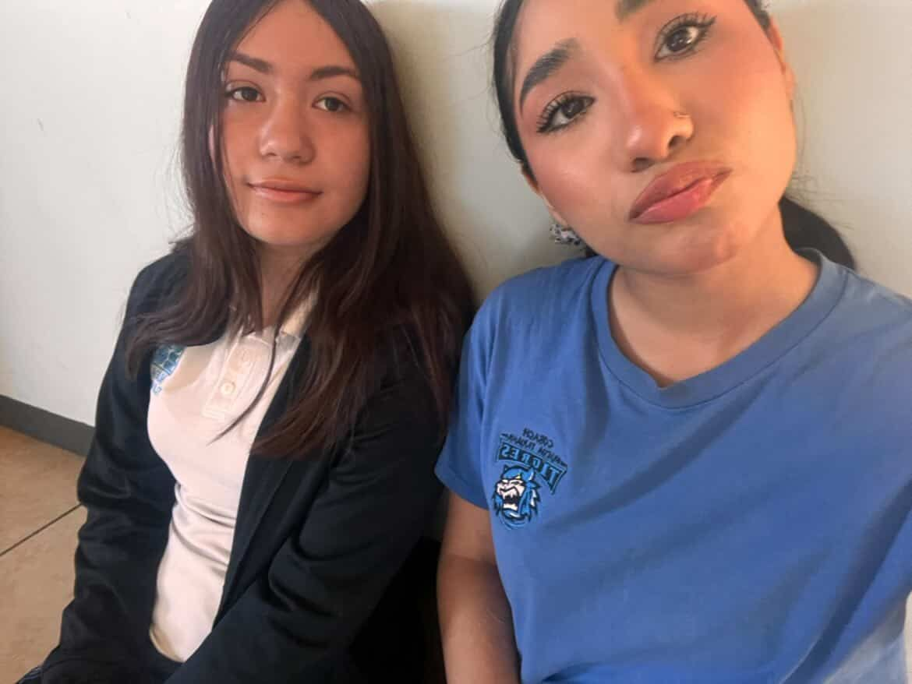
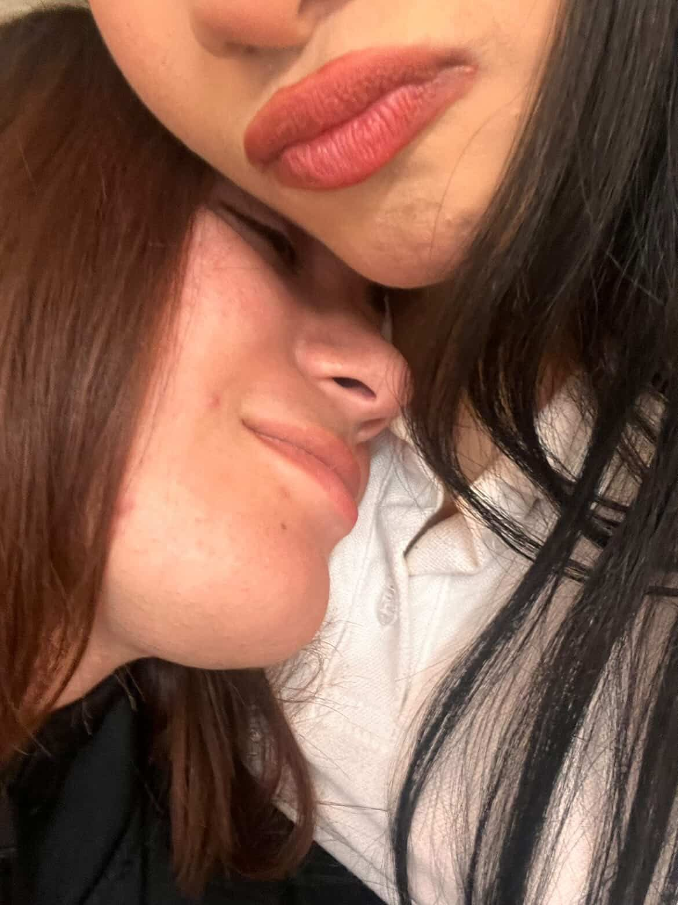
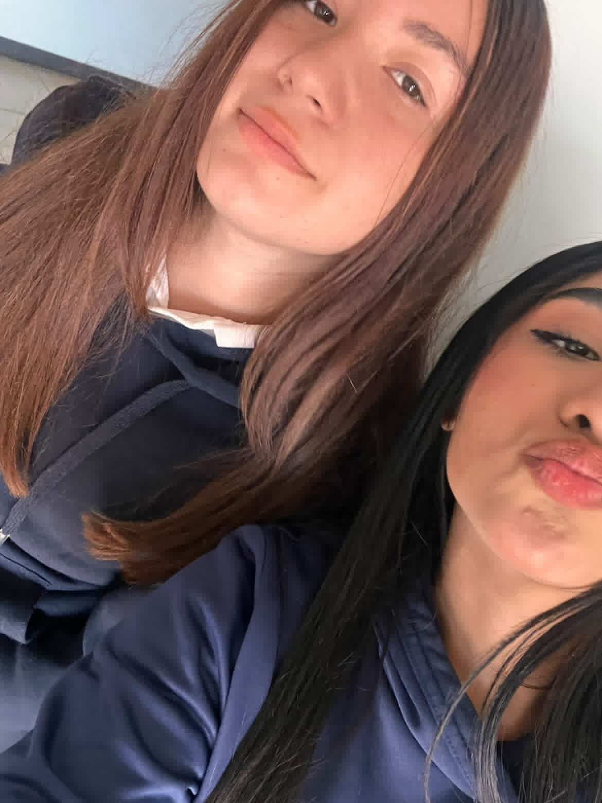

Te quise hacer un pequeño detallito por nuestros 8 meses; y como sé que no nos hemos podido ver estos días decidí hacerte esta página.
Fotitos kiuts y kawais 📸








Una pequeña carta para ti 💌
Bueno corazón, espero te esté gustando este detallito, todo lo he hecho con todo el cariño y amor del mundo porque es lo que mereces, no sabes lo enamorada que estoy de tí, se que lo repito muchas veces pero créeme que lo hago con todo mi ser, para mi eres lo más importante en mi vida y si te pasara algo no se que pasaría conmigo, te anhelo siempre y eres mi sueño hecho realidad, para mi eres esa niña chiquita de las fotos que me has mandado, por eso siempre quiero protegerte porque me pone triste saber que pasas por algo malo, te amo muchísimo mi niña preciosa, que nunca se te olvide eso y en serio mil gracias por seguirme permitiendo ser tu novia, por estos 8 mesesitos y espero sean muchisisisimos más, porque yo ya no te pienso soltar para nada 🥺🫰. En fin; te amo infinitamente preciosota, me encantas muchisimooo, no se te olvide nunca 💕.
Fechitas importantes para mi.
16/12/2025 - Se que siempre lo menciono, pero de verdad esta fecha es demasiado importante para mí, ya que tuve el valor de confesarte lo que sentía por tí y como siempre digo, se que fue muy tonto la forma en que lo hice, pero de verdad estaba muy nerviosa porque era la primera vez que lo hacía y nisiquiera estaba segura si tu también sentías lo mismo por mí, pero ya no quería dejar que pasara mas tiempo porque me daba miedo que alguien más se comiera mi torta (o sea, que te pusieras de novia con alguien más) 🥺💔, además ya no quería seguir sufriendo por no saber que onda.
17/01/2026 - Esa fue la primera vez que te regalé flores, he de admitir que ese día me sentí super realizada porque esa era una de las cosas que quería que fueras mi primera vez desde que me empezaste a gustar, también siento que fue una cagadota, pero te juro que hice mi mayor esfuerzo, también estaba muy nerviosa 🥺🕊️.
16/08/2026 - El día de hoy cumplimos 8 maravillosos mesesotes, cada vez más cerca del añito juntitas, no sabes lo feliz que estoy de haber compartido este tiempito de mi vida junto a tí, eres alguien maravillosa, te admiro mucho por todo lo que haces y de lo capáz que eres, cada día me enamoro más de tí por ser tan brillante, quiero todo contigo, para mi eres alguien más que perfecta, nunca lo olvides 💓
Y recuerda que tu eres mi mundo y mi todo, te amo con todo mi corazón, como dijo AIMEP3: "siempre tuya, siempre mía, siempre nuestro". 💗
Espero te haya gustado muchísimo porque la neta ya no me acordaba como hacerla y he de aclarar que toda la programación la hice en el bloc de notas y por es es tan poquito 😔.